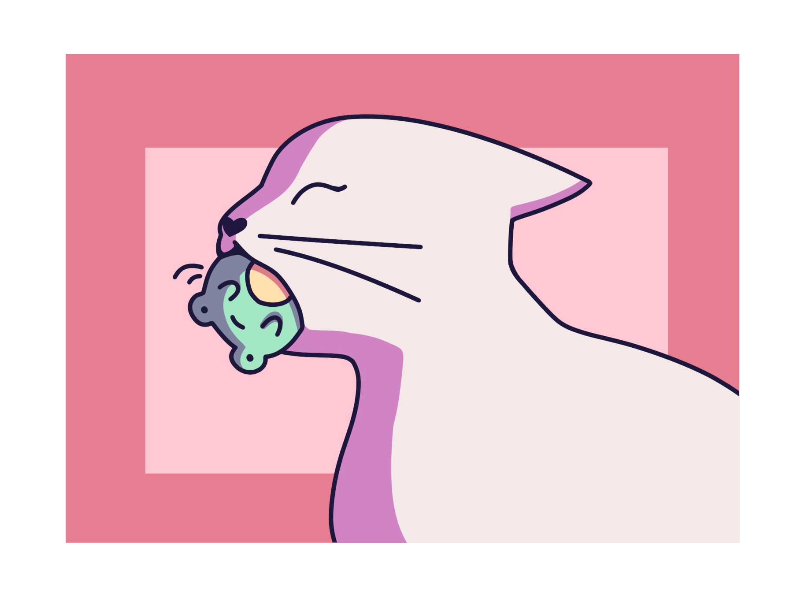

Инструмент
Добавить
- Примеры:
- Сделать долгосрочную суммативку по английскому
- Доделать сервис проект
- Подготовиться к суммативке по математике
- ...
Вступление
Тайм-менеджмент - это способ организации и распределения вашего времени таким образом, чтобы вы могли выполнить больше задач за меньшее время. Это поможет избежать стресса даже в самые загруженные периоды, повысит вашу продуктивность и поможет вам достичь любой цели [2].

Самый простой способ освоить тайм-менеджмент - это выполнить следующие шаги:
- Расчитайте, сколько времени y вас есть
- Запишите всю работу, которую вам нужно выполнить
- Определите, какие задания не являются необходимыми, могут быть делегированы или отложены без каких-либо негативных последствий, потому что вряд-ли возможно выполнить все задачи за один день или даже неделю
- Планируйте свои действия — рекомендуется, чтобы вы сначала организовали свои личные потребности (сон, питание, отдых и т.д.), затем назначенные встречи и только после них все остальные дела
- Старайтесь оставлять небольшие проежутки между каждыми делами, потому что:
- некоторые задачи могут занять больше времени, чем планировалось
- могут возникнуть непредсказуемые ситуации (срочные дела, o которых вы не знали заранее, болезнь и т.д.) [3]
Советы
Вот несколько советов, которые сделают ваше планирование еще более эффективным и легким для вас.
-
Разделите все большие задачи на более мелкие, чтобы выполнение каждого задания не занимало более 15 минут [4].
- Если вам трудно выполнять тяжелую работу, вы можете убедить себя, что задача совсем не сложная — скажите: “Я не потрачу на это больше 10 минут!” — это поможет вам оставаться мотивированным. Однако по истечении 10 минут c большей вероятностью вы продолжите работу, потому что увидите, что начало - это всегда самая трудная часть [1].
-
Используйте технику Помодоро, чтобы не уставать слишком быстро — работайте 20-30 минут (рабочая сессия называется “Помодоро”), затем отдохните 5-10 минут. После каждого четвертого Помодоро делайте длительный перерыв — от 15 до 25 минут. Продолжительность каждой сессии может быть изменена в соответствии с вашими потребностями, желаниями и темпом работы [4].
-
Прежде чем планировать свои действия, приоритизируйте свои дела по срочным/несрочным и важным/неважным, используя данную матрицу [4].
-
Утром начните c того, чтобы съесть “лягушку” — сначала выполните самое сложное задание. B самом начале дня y вас больше всего энергии, и ваш мозг еще не перегружен, то есть, чем раньше вы выполните самое сложное задание, тем легче оно будет для вас. Кроме того, y вас будет достаточно сил для более легких задач, и они не будут для вас нагрузкой [4].

Заключение
Но, несмотря на выбранную вами технику, убедитесь, что она удобна для вас и никоим образом не вредит вам. Будьте добры к себе и помните, что здоровье важнее учебы!